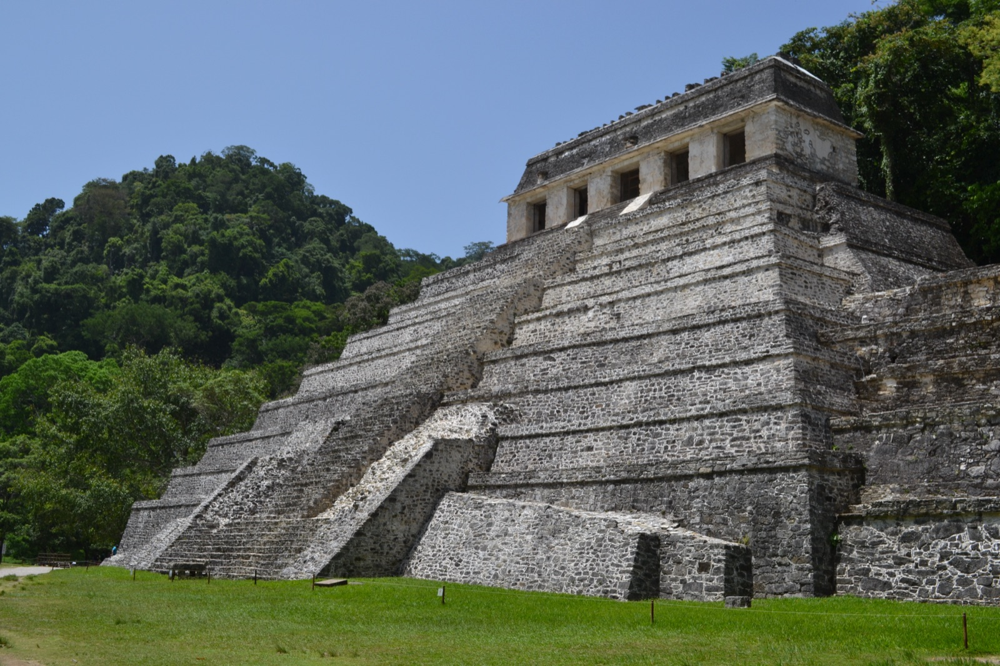
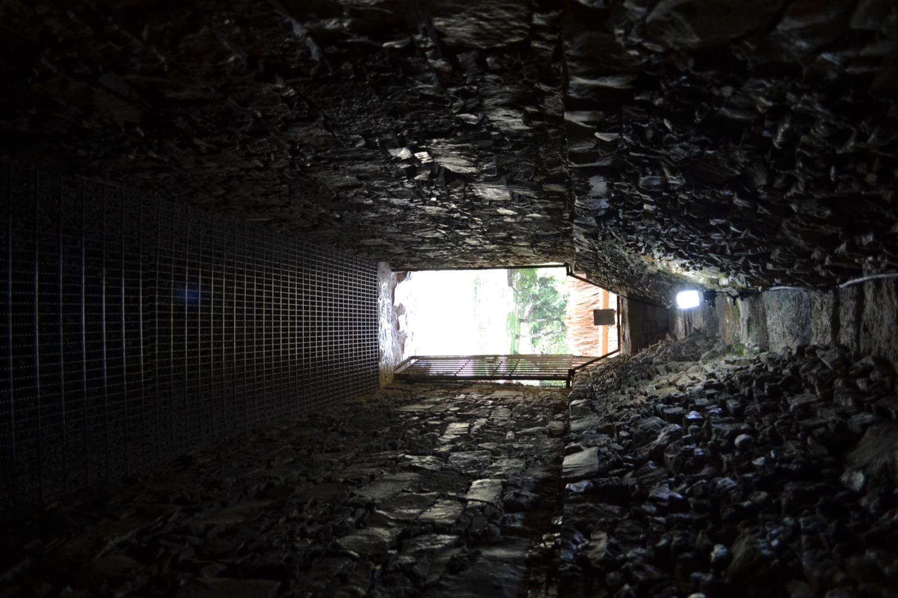
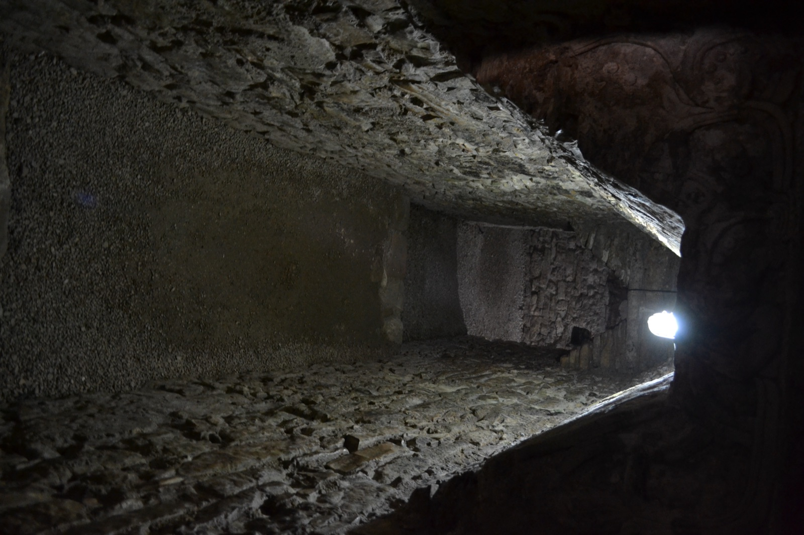
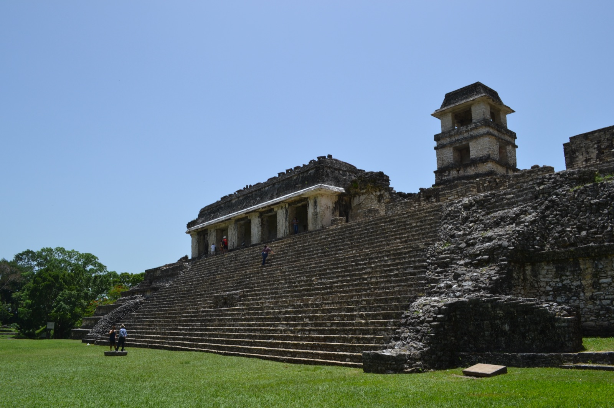
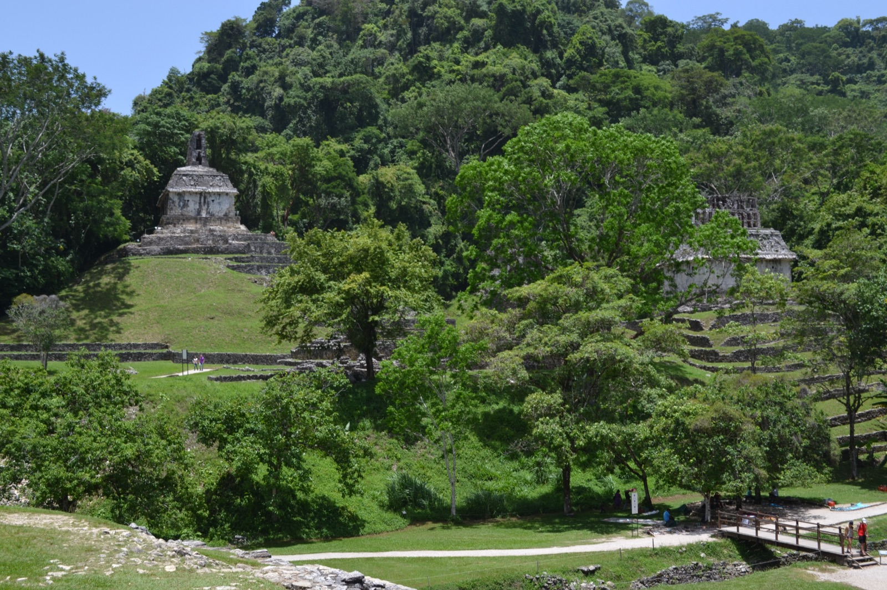
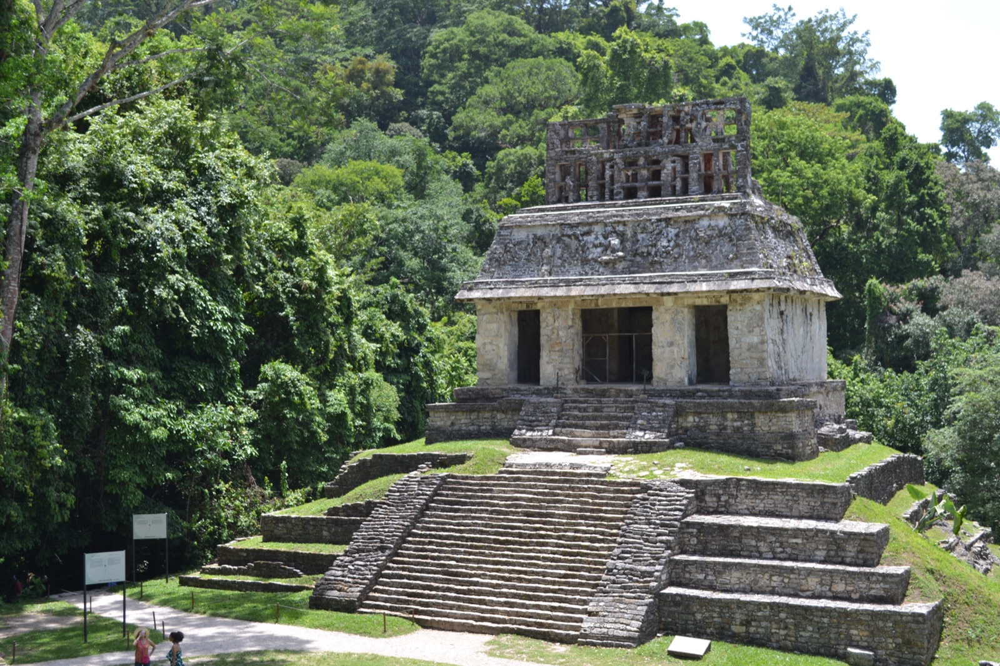

メキシコシティで人類学博物館・グアナファト・テオティワカンと巡ったあと、次に向かったのがパレンケ（Palenque）だった。チアパス州のジャングルに残るマヤの古典期都市遺跡で、世界遺産（1987年登録）。メキシコシティから直接の陸路は遠いので、国内線でビジャエルモサ（Villahermosa）まで飛び、そこから陸路でパレンケに入った。遺跡近くの小さな町に泊まって、翌朝に遺跡へ向かった記憶がある。
標高2,200mのメキシコシティから一気に低地ジャングルに降りると、空気の質が完全に切り替わる。常時の高湿度、肌に張り付く熱気、絶え間ない鳥と虫の声——テオティワカンの乾いた高原遺跡とは対極の世界だった。
碑文の神殿——パカル王の墓を抱えた階段ピラミッド
パレンケの象徴が、入口を入ってまず正面に現れる碑文の神殿（Templo de las Inscripciones）だ。9段の基壇を積み上げた階段ピラミッドの頂上に、三つの入口を持つ神殿が乗っている。完成は7世紀末ごろとされる。


名前は、頂上神殿内部の壁面に刻まれた620文字を超えるマヤ文字の石板「碑文」に由来する。マヤ古典期の長文碑文としては最大級のひとつで、ここから刻まれた歴代王の系譜と暦が読み解かれた。
そしてこの神殿を世界的に有名にしたのが、1949年にアルベルト・ルース・ルイリエルが発見した王墓だ。神殿の床石の一枚を持ち上げると、その下に秘密の階段が隠されており、階段を辿った先で紀元683年に没した王パカル（K'inich Janaab' Pakal）の石棺が見つかった。マヤ世界で初めて確認されたピラミッド内部の王墓で、「マヤのピラミッドは神殿であって墓ではない」とされていた当時の常識を覆した発見になった。
石棺の蓋に彫られたパカル王の浮彫は、死から再生へ向かうマヤ宇宙の構造を凝縮した代表的な図像として知られる。本物は現在 メキシコシティの国立人類学博物館 に移管されており、地下の王墓室は保存のため一般公開されていないが、神殿そのものに登っているだけで「この下にあれが眠っていた」という重さが伝わってくる。


宮殿（El Palacio）——観測塔とT字型窓
碑文の神殿の北側に広がるのが、宮殿（El Palacio）。複数の中庭を持つ大規模な複合建築で、パレンケの王族が政務と日常を営んだ場所と考えられている。

最大の特徴が、4階建ての観測塔（Torre）。マヤ建築では珍しい背の高い独立構造で、天文観測や見張りのための塔とされる。冬至の日に塔の特定の窓から見ると、太陽が碑文の神殿の方角に沈んでいくように設計されているという話もある。

宮殿の入口枠や窓には、マヤ建築特有のT字型の開口部が随所に見られる。雨と風を逃すための実用的な工夫だったとも、神聖な記号としての意味を持っていたとも言われている。
葉十字神殿群（Grupo de las Cruces）——十字の神殿と太陽の神殿
宮殿のさらに東、小川を渡って高台に上がると、葉十字神殿群（Grupo de las Cruces）が現れる。十字の神殿（Templo de la Cruz）、太陽の神殿（Templo del Sol）、葉十字の神殿（Templo de la Cruz Foliada）の3つの神殿がコの字型に並ぶ建築群で、パカル王の息子チャン・バフルム（K'inich Kan B'alam II）の即位儀礼を象徴する空間とされる。

3神殿に共通するのが、頂上神殿の屋根に乗った透かし装飾「ロフ・コーム」（roof comb）だ。建物本体より上に立ち上がる薄い壁状の構造物で、彫刻と漆喰で装飾されていた。風通しを確保しつつ建物を象徴的に高く見せる、パレンケ建築の代表的なディテールになっている。


3神殿の内陣には、それぞれ「世界樹」「太陽神」「とうもろこし神」を中心に据えた象徴的な石板が配置されており（本物の多くは博物館に移管）、合わせて読むとチャン・バフルムが神々の系譜を継承して王権を得た物語になっているという。
ジャングルとの一体化
パレンケ最大の魅力は、建造物そのものよりも「ジャングルが遺跡を呑み込む途中で、たまたま動きが止まっている」感覚かもしれない。テオティワカンの乾いた石とは違い、パレンケの石は常に湿り、コケと地衣類で薄く緑がかっている。鳥と虫の声が止まることがなく、目の前の神殿の向こうにも、まだ発掘されていない丘が森に隠れたまま続いている。
実際、パレンケ遺跡として整備・公開されている範囲は都市全体のごく一部に過ぎず、登録されている建造物の数の数倍が、まだジャングルの下に眠っているとされる。歩いていても、整備された道の脇に苔むした石組みが顔を出している場所が点々とあった。
アステカ・テオティワカンを「文明の集積」として体感したあとに来ると、パレンケはむしろ「文明が忘れられていく速度」を見せてくれる場所だった。3000年残るオルメカ巨頭やアステカの太陽の石とは違う、もっと脆くて湿っぽいものを生かしておくための保全活動の上に、パレンケは立っている。